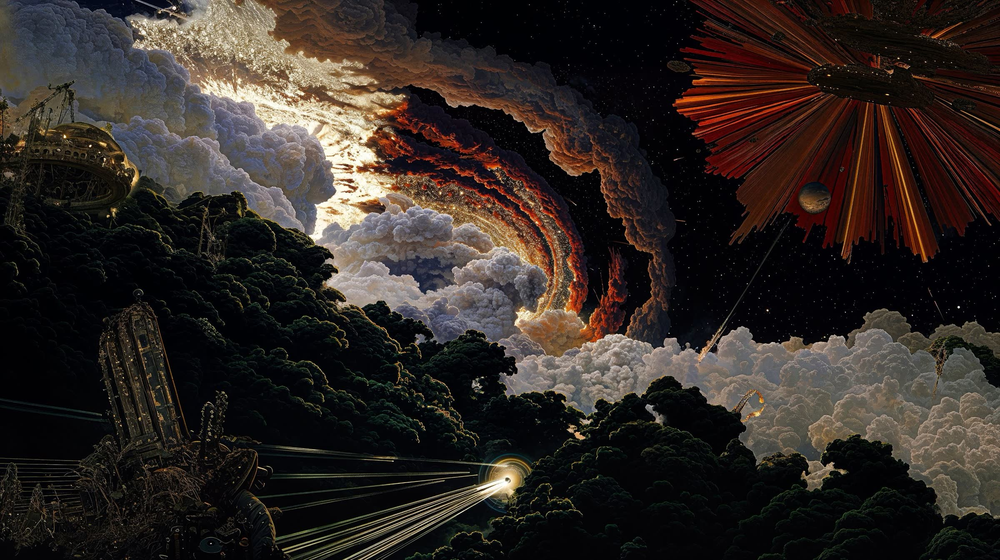

N1GHT CHXN9
01 / Photography
The slow side
of the year
02 / The archive
What shaped me

The dust settles the way it always has, on old angles and steady hands.

The west ends like all good stories: slowly, and on a hill at sunset.

Every alley keeps a story, and the rain only makes the colors louder.

A city learned street by street, with satire sharper than its neon.

Four seasons in one blur. Britain at three hundred per hour, and finally, quiet.

Three cities, three endings; the coin still flips somewhere inside me.

A spreadsheet with a heartbeat. Third tier to Europe, one Sunday at a time.

Same pitch, new numbers. The grass still bends for a well-weighted through ball.

Hesitation is defeat. Everything else is just footwork.

In the Lands Between, dying is a detour, not a defeat.

Every dice roll is a promise the story keeps. Fail beautifully, reload rarely.

The staff remembers every sky it has broken. So do you.

No legs, no plan. Gravity just wants a hug.

The war table is chaos; the squad makes it a story.

Parkour over the day, run from the night. The city bites either way.

Forty-seven ways to vanish. Patience is the loudest one.

Love is a co-op game: you fail together, you fly together.

The clock never lies; the ankle-breaker writes poetry.
Dylan Thomas / A villanelle / 1947
Do not go gentle.
One poem about refusing to go quietly. Written for a father, kept by everyone else, and the reason this page keeps everything bright.
Do not go gentle into that good night,
Old age should burn and rave at close of day;
Rage, rage against the dying of the light.Though wise men at their end know dark is right,
Because their words had forked no lightning they
Do not go gentle into that good night.Good men, the last wave by, crying how bright
Their frail deeds might have danced in a green bay,
Rage, rage against the dying of the light.Wild men who caught and sang the sun in flight,
And learn, too late, they grieved it on its way,
Do not go gentle into that good night.Grave men, near death, who see with blinding sight
Blind eyes could blaze like meteors and be gay,
Rage, rage against the dying of the light.And you, my father, there on the sad height,
Curse, bless, me now with your fierce tears, I pray.
Do not go gentle into that good night.
Rage, rage against the dying of the light.